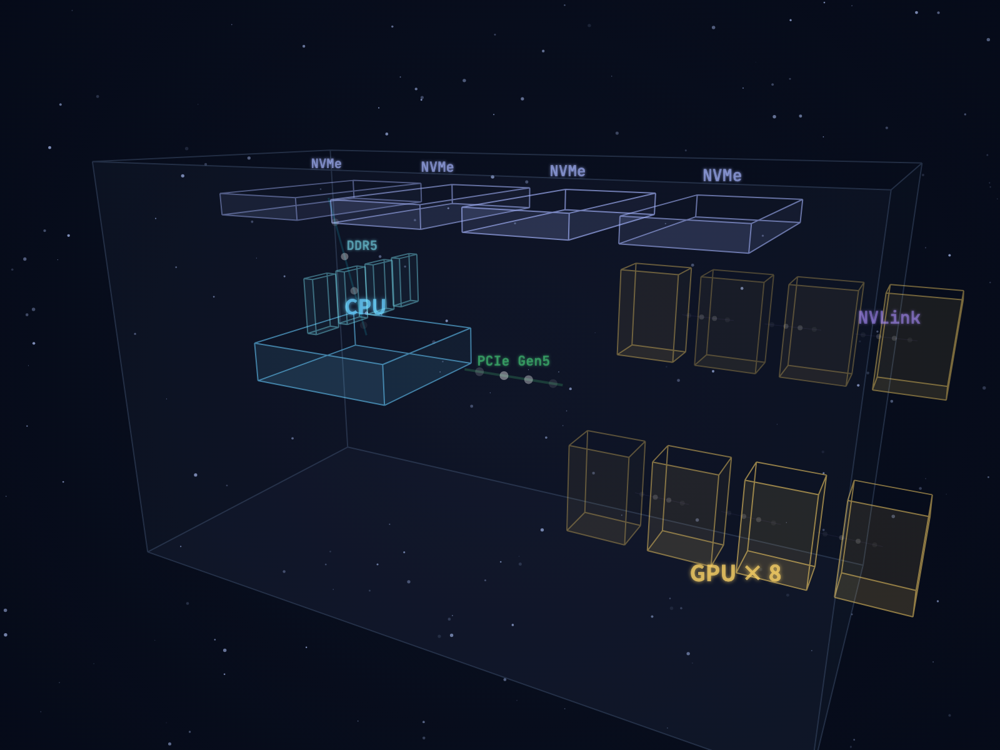
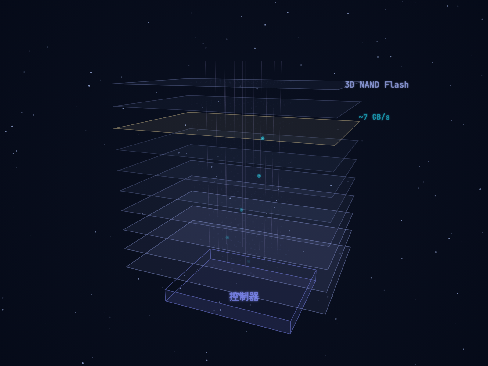
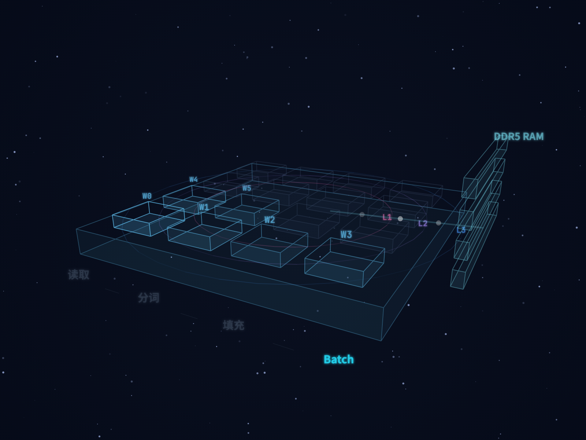
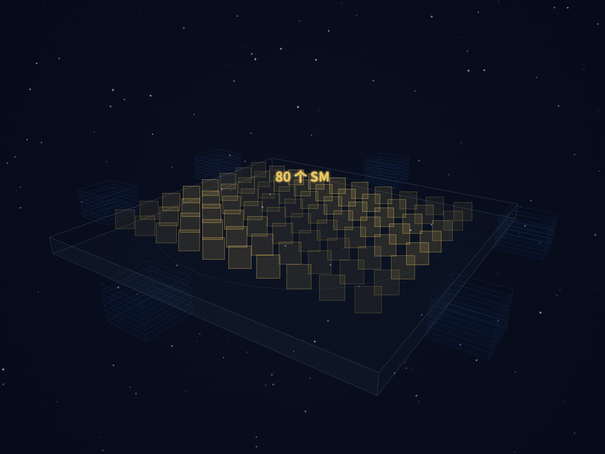
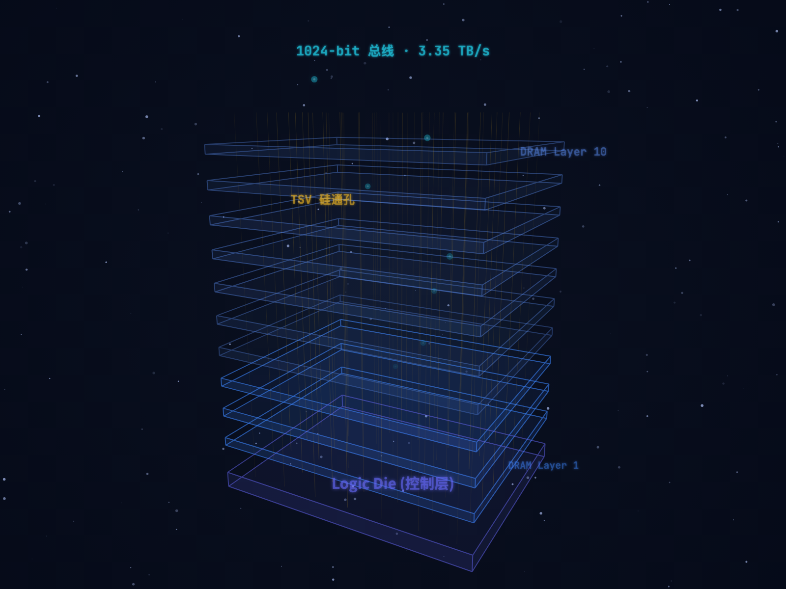
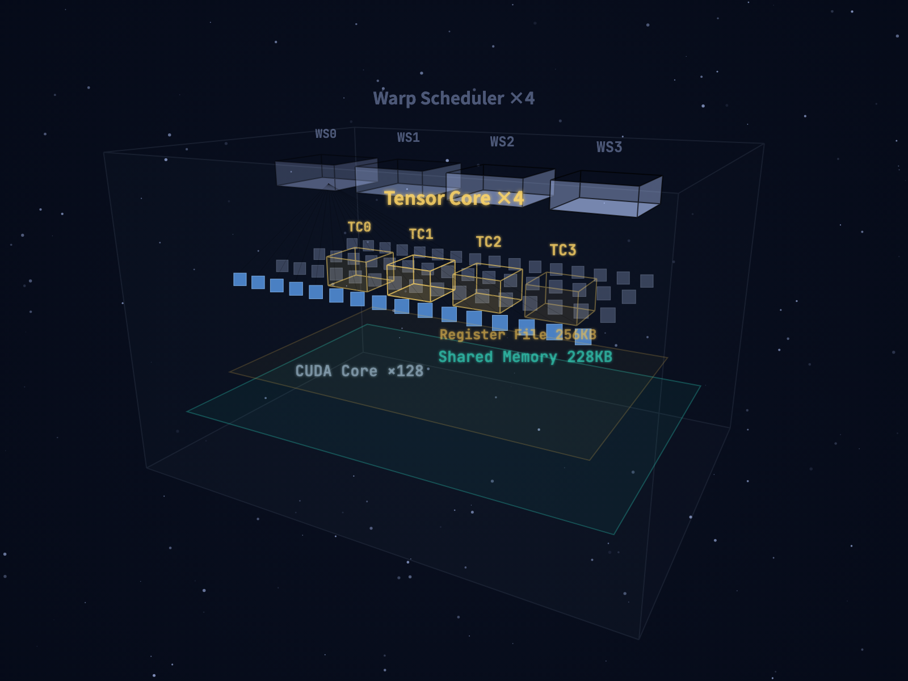
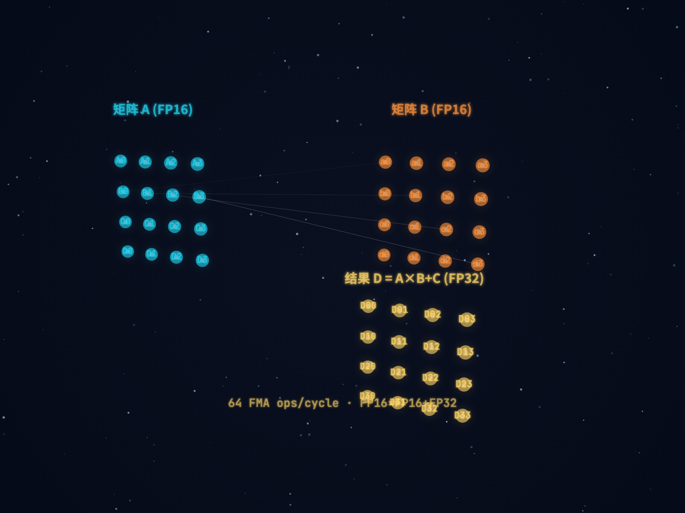
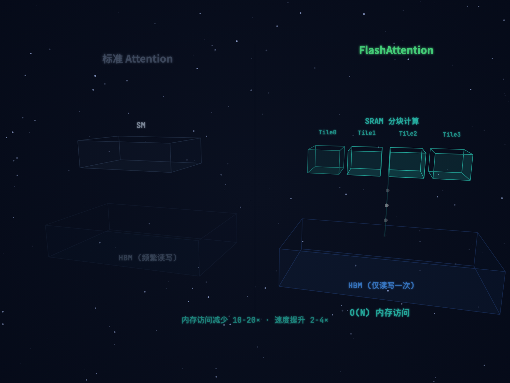
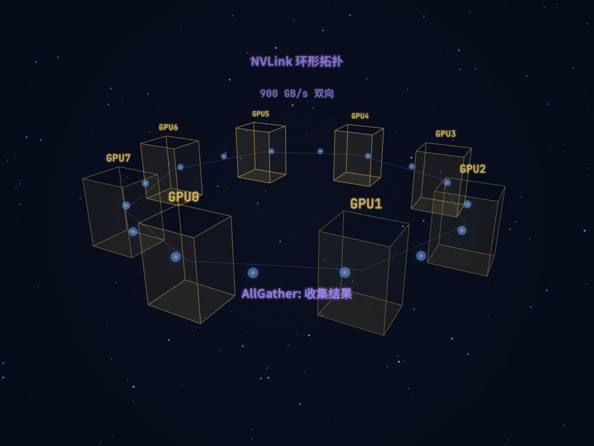

从NVMe到Tensor Core的完整旅程 · 17个3D场景深度拆解
一台典型的AI训练服务器内部由三大部分组成：
NVMe SSD阵列——存储海量训练数据（通常几TB到几十TB的文本语料）。CPU + DDR5内存——负责数据读取、预处理和批次组装。8块GPU——训练的主力军，通过PCIe连接CPU，通过NVLink互相连接。一次训练迭代，数据将穿越所有这些硬件。

▲ 3D全景：NVMe → CPU → PCIe → GPU×8 + NVLink互联
现代NVMe固态硬盘使用3D NAND Flash技术——数十层甚至上百层硅片像楼房一样垂直堆叠。每一层都密布着微小的存储单元（浮栅晶体管），通过捕获或释放电子来存储0和1。SSD控制器负责从这些层中读出训练用的token序列，经由NVMe协议封装后通过PCIe发出。
NVMe SSD的顺序读取带宽约7 GB/s——听起来很快，但和GPU内部带宽相比，这只是旅程的起点。后面我们会看到，GPU内部最快的存储带宽是它的近3000倍。

▲ 3D NAND堆叠层 + 底部控制器 + TSV垂直互联
数据到达CPU后进入预处理流水线。PyTorch的DataLoader会启动多个Worker进程（通常4-8个），每个Worker占用一个CPU核心，并行执行：读取原始文本 → 分词（Tokenization）→ 填充到统一长度（Padding）→ 组成批次（Batch）。
CPU核心周围环绕着三级缓存——L1（最快，每核32-48KB）、L2（每核1-2MB）、L3（共享，几十MB）。DDR5内存提供约90 GB/s带宽。如果DataLoader成为瓶颈（GPU利用率低于60%），可以增加Worker数量或使用内存映射文件加速。

▲ CPU多核并行 + 三级缓存同心圆 + DDR5内存条
批次数据通过PCIe Gen5 x16通道从CPU传到GPU——16条并行数据通道组成高速隧道，带宽64 GB/s。然而这条"高速公路"相比GPU内部带宽，只是一条"乡间小路"——HBM带宽是PCIe的52倍。这就是为什么大模型训练要尽量减少CPU↔GPU数据搬运，优先在GPU端做一切能做的事。
| PCIe代际 | x16带宽 | 每代提升 |
|---|---|---|
| Gen3 | 16 GB/s | — |
| Gen4 | 32 GB/s | 2× |
| Gen5 | 64 GB/s | 2× |
| Gen6（下一代） | 128 GB/s | 2× |
数据抵达NVIDIA H100 GPU芯片。从空中俯瞰：中央密布80个SM（流多处理器，总计528个Tensor Core），四周矗立6组HBM3存储塔（总计80GB显存），中间环绕50MB L2 Cache。数据沿着 HBM → L2 → SM 的路径流入计算单元。

▲ H100芯片版图：SM网格(金色) + L2环(青色) + HBM塔(蓝色)
HBM（High Bandwidth Memory）是GPU的主显存。它的核心技术是3D堆叠——8-12层DRAM die像三明治一样垂直叠放。层与层之间通过数千根TSV硅通孔（Through-Silicon Via，直径仅5微米）连接，形成垂直数据通道。
关键指标：1024-bit超宽总线——是普通DDR5（64-bit）的16倍。这就是HBM能达到3.35 TB/s带宽的秘密。类比一下：如果DDR5是一条单车道公路，HBM就是一条16车道的高速公路。

▲ HBM3D堆叠：多层DRAM + TSV硅通孔(金色柱子) + Logic Die
GPU内部有四级存储，越往上越快越小。大模型训练优化的核心思路就是：让数据尽量留在金字塔上层，减少对底层HBM的访问。FlashAttention正是这一思想的经典实践。
| 层级 | 容量 | 带宽 | 延迟 |
|---|---|---|---|
| Register File | 256KB/SM | 近乎无限 | 1 cycle |
| Shared Mem/L1 | 228KB/SM | ~19 TB/s | ~30 cycles |
| L2 Cache | 50MB | ~6 TB/s | ~200 cycles |
| HBM3 | 80GB | 3.35 TB/s | ~600 cycles |
一个SM（Streaming Multiprocessor）是GPU的基本计算单元。内部结构：4个Warp Scheduler负责调度——每个Warp包含32个线程，以SIMT（单指令多线程）模式同步执行。128个CUDA Core做通用计算（标量/向量运算），4个Tensor Core做矩阵乘法——这才是AI训练的核心引擎。底部是Shared Memory（228KB）和Register File（256KB），它们是离计算单元最近的高速存储。

▲ SM内部：Warp Scheduler(顶) → CUDA Core阵列(蓝) → Tensor Core(金)
Tensor Core执行的核心操作是D = A × B + C——两个4×4矩阵在一个时钟周期内完成全部64次乘加运算。输入使用FP16半精度（16位），累加器使用FP32全精度（32位）——这就是混合精度计算的硬件基础。一块H100有528个Tensor Core，理论算力接近990 TFLOPS（FP16）。

▲ 4×4矩阵乘加动画：A(FP16) × B(FP16) + C → D(FP32)
训练第一步是Embedding：每个Token ID作为地址，从HBM中的权重矩阵（128K×4096，约1GB）查表取出嵌入向量。数据沿存储金字塔 HBM→L2→Shared Memory 逐级搬运。
然后进入Transformer的核心——自注意力机制：输入分别投影为Query（我在找什么）、Key（我是什么）、Value（我的内容）。Q×K^T得注意力分数，Softmax归一化后与V加权求和——所有矩阵乘法都由Tensor Core执行。
标准Attention的致命问题：Q/K/V在HBM和SM之间反复搬运——读出来算，写回去，再读出来继续算。内存访问量O(N²)，HBM不堪重负。
FlashAttention彻底改变了这一点：把数据分成小块（Tiling），在SRAM中一次性完成全部注意力计算，只把最终结果写回HBM一次。效果惊人：
HBM访问减少 10-20× · 训练速度提升 2-4× · 支持4倍更长的上下文

▲ 左：标准Attention(HBM反复读写) | 右：FlashAttention(SRAM分块计算)
注意力之后是前馈网络（FFN）：维度4096→16384→4096的"扩展-激活-压缩"流程。FFN占了Transformer总计算量的2/3。关键问题——每层的激活值都要写回HBM保存，因为反向传播需要用到。这就是训练比推理消耗更多显存的根本原因。
Loss计算完毕后，梯度从顶部逆流而下。每经过一层：读出保存的激活值 → 计算梯度 → 写回HBM。一个70B模型的HBM被四类数据塞满：
| 数据类型 | 大小(FP32) | 说明 |
|---|---|---|
| 模型权重 | 280 GB | 70B × 4字节 |
| 梯度 | 280 GB | 每个参数一个梯度值 |
| 优化器状态(Adam) | 560 GB | 动量m + 方差v，各280GB |
| 总计 | ~1.12 TB | 单卡80GB远远不够 |
梯度检查点可以节省60%激活值内存：只保存部分层的激活值，反向时重新计算——用33%额外计算换内存。
FP32主权重(32位) → Cast转FP16(16位) → Tensor Core原生加速 → 梯度用Loss Scaling防止下溢(先放大1024倍计算，再缩回) → 转回FP32更新主权重。节省~50%显存，速度提升2-3×，精度损失几乎为零。
8张GPU通过NVLink组成环形拓扑。NVLink 4.0双向带宽900 GB/s，是PCIe Gen5的14倍。
AllReduce梯度同步分两步：ReduceScatter——每张GPU把梯度分成8份，沿环发送碎片并累加收到的碎片，7轮后每卡持有1/8完整累加。AllGather——累加好的碎片再沿环传播，每卡收集到完整的平均梯度。通信与计算可以重叠（Pipeline并行），进一步隐藏延迟。

▲ 8卡环形拓扑 + NVLink光束 + AllReduce粒子流动
Adam优化器维护三组数据：梯度g、动量m、方差v。更新公式：
70B模型的优化器状态就占560GB——超过权重本身的两倍！所以必须用多卡分摊。权重更新完毕，新的Batch从NVMe出发——整个训练循环，永不停歇。训练GPT-4级别的模型，这个循环要重复数百万次。
| 层级 | 带宽 | vs NVMe |
|---|---|---|
| NVMe SSD | 7 GB/s | 1× |
| PCIe Gen5 | 64 GB/s | 9× |
| DDR5 | 90 GB/s | 13× |
| NVLink 4.0 | 900 GB/s | 129× |
| HBM3 | 3.35 TB/s | 479× |
| SRAM | ~19 TB/s | 2714× |
如何减少数据搬运、让数据留在高速存储中——这就是大模型训练优化的核心思想。FlashAttention、混合精度、梯度检查点、算子融合，每一项优化的本质都是在这座存储金字塔上做文章。
GPU架构 HBM Tensor Core NVLink FlashAttention 混合精度 AllReduce